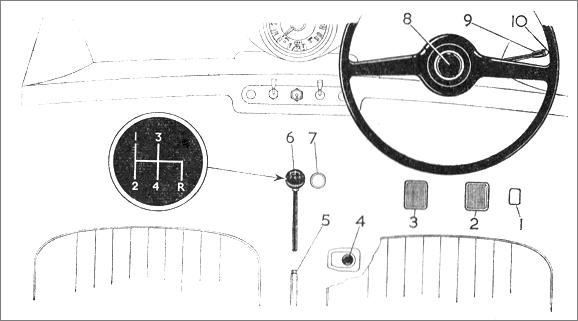

Controls
The main controls include the pedals, gears and handbrake.

| 1 | Accelerator pedal |
| 2 | Brake pedal |
| 3 | Clutch pedal |
| 4 | Starter switch |
| 5 | Hand brake |
| 6 | Gear lever |
| 7 | Headlight dip switch |
| 8 | Horn |
| 9 | Direction indicator |
| 10 | Direction indicator warning light |